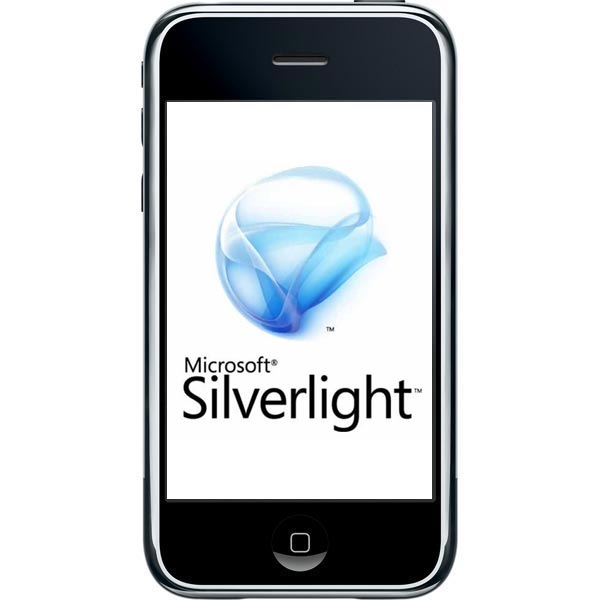
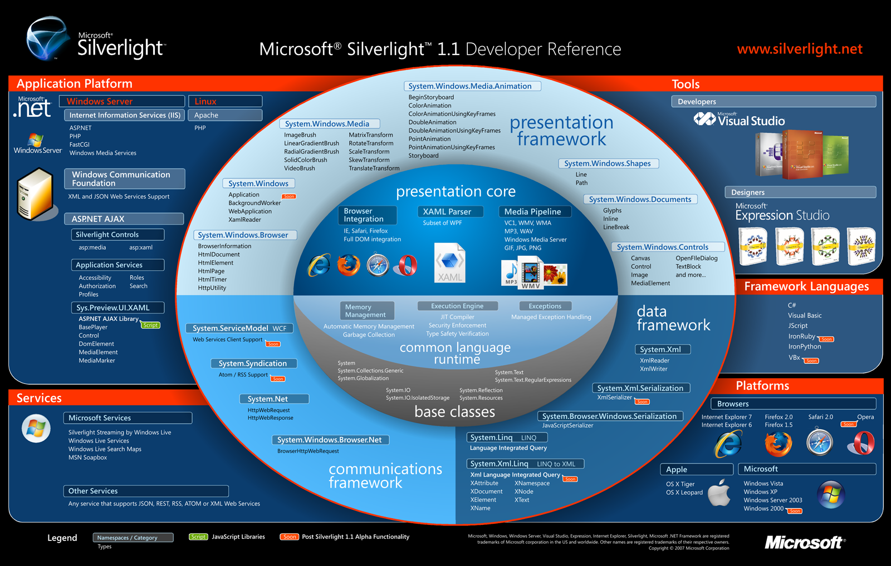

"SILVERLIGHT"
1. Introduccion
Que es SilverLight?
Microsoft Silverlight es un complemento de Microsoft que nos permite desarrollar aplicaciones enriquecidas para la web. Silverlight funciona sobre varias pla
taformas y múltiples exploradores y proporciona una nueva generación de experiencias de usuario basadas en .NET. Tras una descarga que se instala en segundos,
Silverlight posibilita una nueva plataforma rica, segura y escalable.
Silverlight ofrece un modelo de programación flexible y coherente compatible con lenguajes .NET como Visual Basic, C# y F#, y otros como AJAX, Python, Ruby y que
además se integra con las aplicaciones web existentes. Silverlight supone una nueva forma de aprovechar los elementos multimedia en los principales navegadores
entre los que se incluyen Firefox, Safari e Internet Explorer tanto en MacOS como en Windows.

Figura 1 SilverLight
2. Historia
La historia de Silverlight se remonta al año 2007, cuando aún se denominaba WPF/e (acrónimo de Windows Presentation Foundation / everywhere, debido a su íntima
relación con esa tecnología y por tener como objetivo ser precisamente multi-plataforma).
En aquel tiempo fue liberada al público la versión 1.0, que su objetivo principalmente estaba enfocado en la reproducción de multimedios. El modelo de
programación de esta primera versión estaba reducido a utilizar JavaScript como lenguaje para la construcción de aplicaciones e incluía únicamente figuras básicas
y texto para crear las Interfaces de Usuario.
Fue hasta la versión 1.1 que Microsoft habría anunciado estaría disponible la plataforma de desarrollo de .NET para poder construir aplicaciones ya que
Silverlight incluiría una implementación del CLR. Esta versión fue posteriormente renombrada a Silverlight 2, por tratarse de una liberación con una gran cantidad
de cambios y mejoras y que merecía una asignación de versión mayor.
Fue a partir de este momento en donde muchos desarrolladores y empresas voltearon a ver esta tecnología, ya que en pocas palabras, significaba poder programar con
la comodidad y robustez de Visual Studio .NET y con alguno de los lenguajes de dicha plataforma, pero no únicamente para Windows sino para Mac también.

Figura 1.2 SilverLight
3. Ventajas
Basadas en .NET Framework, Silverlight permite que los desarrolladores y diseñadores usen de una manera fácil las habilidades y herramientas existentes para
proporcionar experiencias de medios y RIA para la Web.
La integración sencilla con las tecnologías y los activos web existentes significa que Silverlight funciona con cualquier plataforma o tecnología web back-end.
Silverlight se integra con su infraestructura y aplicaciones existentes, que incluyen Apache, PHP, así como JavaScript y XHTML en el cliente.
Diferentes opciones de lenguajes de desarrollo que incluyen C#, Visual Basic.NET y F# además de JavaScript, Ruby, Python, etc.
Herramientas de funcionalidad específica tanto para diseñadores como para desarrolladores que aprovechan los estándares web y la amplia variedad de características
de la plataforma de aplicaciones .NET de Microsoft.
Expression Studio (diseñadores) para crear interfaces de usuario interactivas y experiencias de medios enriquecidas, preparar medios para su codificación y
distribución, y crear sitios compatibles con estándares W3C mediante los nuevos XHTML, XML, XSLT, CSS y ASP.NET.
Visual Studio (desarrolladores) para el desarrollo de código de cliente y servidor con la característica Intellisense completa, depuración eficaz en varias
plataformas, compatibilidad con lenguaje enriquecido y mucho más.
Modelo de presentación coherente con XAML, el lenguaje de presentación declarativo usado en aplicaciones de Windows 7. Los controles, diseños visuales, archivos
multimedia y otros elementos se pueden presentar con total fidelidad de diseño en las aplicaciones de Silverlight y de Windows.
El modelo de control extensiblefacilita la adición de contenido y comportamientos enriquecidos mientras que permite la reutilización y el uso compartido del
código.

Figura 2 SilverLight
4. Desventajas
Si Apple no permitió Flash en el iPhone, ¿qué nos hace creer que lo hará con Silverlight?
Silverlight entra tarde al juego. Flash es maduro, se confía mucho en él. Silverlight solamente viene con una beta.
Las herramientas de diseño son Expression Blend y Expression Design pero, ¿quién las usa? El mundo del diseño usa Adoble Photoshop.
5. Requerimientos
Configuración del sistema recomendada para Silverlight 3:
Windows: X86 o x64, CPU 500MHz o superior y 128MB de RAM.
Mac OS 10.4.8+basadas en Intel: Intel Core Duo 1.83GHz o superior y 128Mb de RAM.
Nota: Tenga en cuenta que al igual que en cualquier plataforma, se deben aplicar las recomendaciones para el uso de lenguajes de scripting para asegurar un
rendimiento adecuado.
Silverlight se ha diseñado como un pequeño complemento, para múltiples exploradores, pensado para realizar una instalación sin dificultades.
Silverlight 3 es compatible con:
Internet Explorer 6, 7 y 8.
Firefox 2 y 3.
Safari 3 y 4.
6. Eventos/Codigos
Aplicaciones de Servidor con Silverlight
No es correcto pensar en Silverlight como una tecnología cliente pensada para incrustar contenido enriquecido en el navegador. Este tipo de contenido enriquecido
ya es posible mediante el uso de complementos cerrados generados como subprogramas de Java, controles ActiveX o aplicaciones Flash. Silverlight, por su parte, es
una tecnología abierta en el sentido que la interfaz de usuario se define en XAML basado en texto y la capacidad de programación se consigue con JavaScript. Esto
permite a los desarrolladores generar fácilmente aplicaciones que interactúen con servidores back-end.
Por ejemplo, consideremos una aplicación cualquiera. Si deseara producir una aplicación meteorológica en el cliente, podría generar un subprograma de Java, un
control ActiveX o una aplicación Flash que use un servicio Web y después se requiera implementar este subprograma en el cliente. Sin embargo, esto aumentaría las
necesidades de comunicación entre el cliente y el servidor. ¿Qué sucede si este origen de datos fuera un servicio de suscripción de pago? La persona que
implementa la aplicación tiene que encargarse de autenticar las licencias de todos los clientes que obtienen acceso al servicio de datos y eso quita tiempo para
crear lógica empresarial específica del dominio.
Sin embargo, si la aplicación se puede ensamblar en el servidor y todos los datos se pueden volver a pasar al cliente, entonces se reducirá la carga de trabajo.
Al usar una herramienta como Expression Blend se puede ensamblar una plantilla para la interfaz de usuario de la aplicación y expresarla como XAML.
A continuación, el desarrollador, en tiempo de ejecución, toma los datos pertinentes y los inserta en la plantilla, devolviendo el XAML terminado al cliente que lo
representa. No se requiere ninguna lógica de conectividad al cliente (aparte de la conectividad inicial con el servidor) y la implementación y administración del
cliente se mantienen relativamente sencillas.